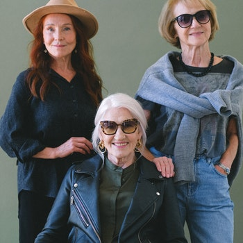

About

Hello! We are Vocal Garage, a friendly platform for up-and-coming artists and bands to get more visibility and presence in the rock genre
(from classic rock to post-rock). Our office/headquarters is in Birmingham, UK. Our journey is to help bands and artists to find their identity and we will provide them with the tools that they need. For example,
we will provide venues to practice for band rehearsals also Vocal Garage will advertise your gigs via our website. Clientele will see your gig location, city, and date also customers can buy their tickets for your gig.
Vocal Garage organizes their yearly (this year will be the first in Alexandra Theatre) event in Birmingham, UK for artists and bands to have possibly their first gig or first stage show.
Various organizations and voluntary associations support the event.
We are happy to introduce our first artist and bands
Dolby, Sending, Condemned, and Leftovers! They all will have their UK debut on May 4th, 2023
Vocal Garage advertises possible merchandise,
so if you have any commodities that you would want to sell, let us know! (Vocal Garage will be on TikTok and Instagram soon).
Our Story
Vocal Garage was created in January 2022. Founders Olga Lewis, Emily Wills, Anastasia Owain had one intention in mind: to make sure that rock genre would keep its significance in music. They met each other while studying to play piano and guitar in Royal Academy of Music. Their passion for rock genre cemented their journey to form Vocal Garage. Join our journey and share our passion to keep rock genre relevant!